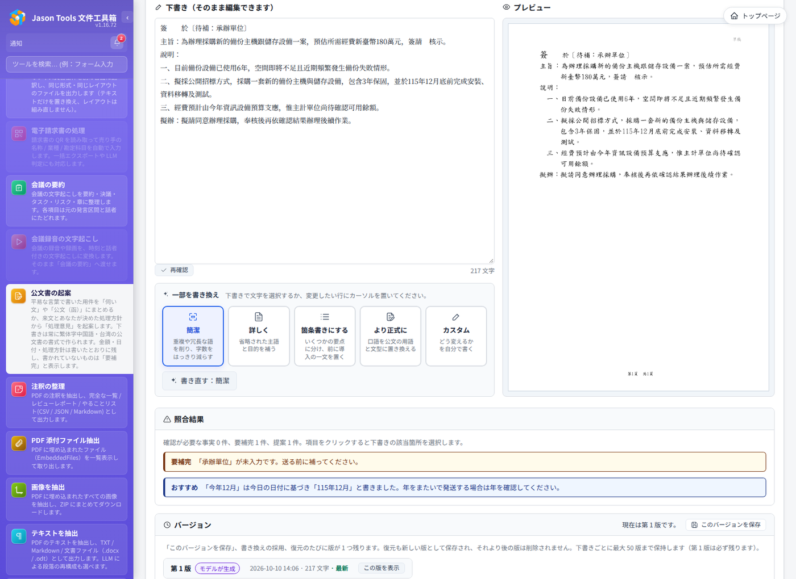

コンプライアンス対応：ISO/IEC 27001 と ISO/IEC 42001
ISO/IEC 27001（情報セキュリティマネジメント）と ISO/IEC 42001（AI マネジメント）の認証対象は組織のマネジメントシステムであり、ソフトウェアではありません。本ページは Jason Tools ドキュメントツールボックス（以下、本ツール）がすでに提供している管理機能と、導入組織での使い方、記録の残る場所をまとめたもので、仕組みづくりと監査証跡の準備の参考になります。
各項目はプログラムの実際の動作と照合済みです。設定箇所は管理画面のページ名で示します。
1. ISO/IEC 27001：情報セキュリティ
1.1 認証
| 本ツールが提供するもの | 導入組織での運用と記録 |
|---|---|
| ローカルアカウント、LDAP、Active Directory、OIDC と SAML のシングルサインオン（ローカルアカウントと併用可） | 「認証設定」と「SSO シングルサインオン」で社内ディレクトリまたは ID プロバイダーに接続し、アカウントのライフサイクルをディレクトリで一元管理 |
| 2 段階認証（TOTP）。監査担当がパスワードでログインする場合は必須 | ポリシーに従って有効化を求める。監査担当のアカウントは別に作成し 2 段階認証を有効化 |
| ログイン失敗時のロック：同じアカウントで 10 分以内に 5 回、または同じ IP から 20 回失敗すると 15 分間ロック（管理者が調整可） | ロックと解除は監査ログに記録（login_fail、account_locked、user_unlock） |
| ログインの有効期間は 7 日、「ログイン状態を保持」で 30 日。管理者はアカウントのすべてのログインを即時に無効化できる | ポリシーに従って有効期間を調整。漏えいが疑われる場合はまずすべてのログインを無効化 |

1.2 アカウントのライフサイクル
| 本ツールが提供するもの | 導入組織での運用と記録 |
|---|---|
| アカウントを無効にすると、そのアカウントのすべてのセッションが即時に無効になる | 退職・異動の手続きでアカウントを無効化。監査ログに user_update |
| 認証が有効な場合、無効化または削除されたアカウントの API トークンはすべて拒否される | トークンを個別に取り消さなくても、使えるアクセスは残らない |
| ディレクトリ同期で、ディレクトリ側で無効化・削除されたアカウントを自動で無効化できる（既定はオフ。1 回の変更が 20% を超える場合は誤停止を防ぐため全体を中止） | 「グループ管理」の定期ディレクトリ同期で有効化。実行ごとに user_auto_disable を記録 |
| アカウントを削除すると、そのワークスペースのファイルも削除される | 監査ログに user_delete |
1.3 アクセス制御と職務分離
| 本ツールが提供するもの | 導入組織での運用と記録 |
|---|---|
| ツールごとにロールで権限を付与し、個人・グループ・AD の組織単位（OU）に割り当てられる。管理者、一般ユーザー、文書管理、財務、営業、法務・セキュリティなどの組み込みロールあり | 職務に応じてロールを設計。「権限マトリクス」ページで誰がどのツールを使えるかを確認 |
| 監査担当ロール：監査ログと履歴の閲覧のみで、ツールは使えない。監査担当を割り当てると他のロールは自動で外れる | 監査と管理を別の担当者が行う |
| フォーム入力・押印・透かしの履歴ファイルとアップロード記録は監査担当のみ閲覧でき、管理者は閲覧できない | 監査担当の閲覧はすべて監査ログに記録（auditor_view） |
管理者が他のユーザーのファイル、ジョブ結果、公文書案件を読むと監査ログに記録（admin_file_override） | これらの記録を定期的に確認 |
ロールと権限の変更はすべて監査ログに記録（perm_change、role_*、user_update など） | アクセス権レビューの際は「設定のバックアップ」でその時点のロールと権限を保存 |

1.4 ユーザー間のデータ分離
アップロードしたファイル、バックグラウンドジョブとその結果、マイワークスペース、公文書案件、会議要約と文字起こしには所有者が記録されます。他のアカウントは閲覧・ダウンロード・取り消し・変更ができず、ID の推測によるアクセスもすべて拒否されます。これらのルールは自動テストで 1 項目ずつ検証しています（TEST_PLAN_SECURITY.md を参照）。
1.5 監査ログ
| 本ツールが提供するもの | 導入組織での運用と記録 |
|---|---|
| サインインの成功と失敗、ロック、サインアウト、アカウント・グループ・ロールの変更、権限の変更、設定の変更、ツールの利用、成果物のダウンロード、管理者による他ユーザーのファイル閲覧、監査担当者の閲覧、データベースのバックアップと破損、保持期間による削除を記録 | 「監査ログ」ページでユーザー・イベント種別・期間で絞り込み、CSV を出力 |
| ツールの利用はファイル名・サイズ・操作・結果のみを記録し、ファイルの内容は記録しない | 記録を必要最小限に保つ |
成果物のダウンロード（マイジョブ、ツールの結果画面、ワークスペース）を file_download に記録：アカウント、接続元 IP、ファイル名、サイズ。同じ人が同じファイルを 5 分以内に再度ダウンロードしても 1 件のみ記録し、プレビューとサムネイルは記録しない | ファイルがいつ、誰によってシステムから持ち出されたかは、イベント種別 file_download で絞り込んで確認 |
API トークンによる呼び出しでは、ツール利用とダウンロードの記録にトークン名（via: api_token）も記録し、アカウントはトークンの所有者として記録 | 各トークンを専用アカウントに割り当て、識別しやすい名前を付ける |
| 画面から監査ログを変更・削除する機能はなく、保存期間に従って自動で削除されるのみ。保存期間の変更自体も記録される | ポリシーに従って保存期間を設定（既定 90 日） |
SIEM への転送：syslog（RFC 5424）、CEF、GELF。複数の宛先を同時に設定可。送信失敗時は自動で再試行し、ローカルに audit_forward_failed を記録 | 「ログ転送」で設定し、長期保存は SIEM に任せる |
1.6 データの保存と削除
次のデータには保存期間を設定でき（「ファイル保存 / 削除」ページ）、6 時間ごとに自動で削除されます。管理者がすぐに削除することもできます。
| データ | 既定の保存期間 |
|---|---|
| 一時アップロードと処理中の出力 | 2 時間 |
| バックグラウンドジョブの結果 | 24 時間 |
| ジョブ記録 | 30 日 |
| マイワークスペース（「ワークスペース設定」で調整） | 24 時間 |
| フォーム入力・押印・透かしの履歴 | 各 365 日 |
| 公文書案件（削除済みのものは削除日から起算） | 365 日 |
| 会議録音の文字起こし用にアップロードされた元の録音（文字起こし中のものは削除しない） | 30 日 |
| 乗車証明の整理 | 365 日 |
| 監査ログ | 90 日 |
「システム状態」ページで、ユーザーごとの現在のファイル数と容量、種類別の内訳を確認できます。
1.7 機密設定の保護
LLM サーバーと埋め込みサービスのキー、音声サービスのキー、OIDC クライアントシークレットと SAML 秘密鍵、通知チャネルのパスワードとトークンは暗号化して保存され（Fernet）、鍵ファイルはサービスアカウントのみが読み取れます。
1.8 文書処理の分離
| 本ツールが提供するもの |
|---|
| Office 変換は毎回新しい使い捨てのプロファイルを使い、マクロの実行を無効にする |
| 変換には時間の上限があり、超過するとすべての子プロセスとともに終了する。低い優先度と限られた CPU コアで実行し、画面の応答に影響しない |
| PDF の隠しコンテンツ検査は別プロセスで解析する |
| 破損したファイルにはエラーメッセージを返し、サーバーエラーにはならない |
Linux では専用のサービスアカウントで実行し、systemd の保護設定（NoNewPrivileges、PrivateTmp、ProtectSystem=strict、ProtectHome）を適用。プログラムのディレクトリはサービス自身から読み取り専用 |
1.9 機密データ処理ツール
- 文書の匿名化：墨消しでは範囲内の画像のピクセルも消去するため、出力ファイルから元の内容を復元できません（スキャン文書や OCR 後のファイルも同様）。
- テキストの匿名化、メタデータの消去、隠しコンテンツ検査、PDF のパスワード保護。

1.10 バックアップと復旧
| 本ツールが提供するもの | 導入組織での運用と記録 |
|---|---|
| ユーザーと権限、監査ログの 2 つのデータベースを毎日自動でホットバックアップし、7 世代を保持 | db_backups を別のホストまたはバックアップシステムに複製して保管 |
コマンドラインツール jtdt db-check、jtdt db-backup、jtdt db-restore で、画面が使えないときも検査と復元ができる | 定期的に復元を演習し、結果を記録 |
jtdt update でのアップグレード時は、ディスク容量を確認してデータディレクトリをバックアップ（3 世代を保持）。失敗したらプログラムのバージョンを自動で戻す | アップグレードの記録は CHANGELOG と照合 |
| 「設定のバックアップ / インポート」：サイト全体の設定をまとめて出力し、別のホストに取り込める | 移設・再構築の際に使用（手順は OPS.md） |
1.11 Web と通信のセキュリティ
- すべての書き込み操作に CSRF トークンが必要です。コンテンツセキュリティポリシー（CSP）はリクエストごとの nonce でスクリプトとスタイルの読み込み元を制限します。
- HTTPS 接続では HSTS を送ります。ログイン用 cookie は
HttpOnlyで、HTTPS 接続ではさらにSecureになります。 - 導入手順では、リバースプロキシで HTTPS を提供し、サービス自体はローカルホストのみで待ち受けることを推奨しています（
OPS.mdを参照）。
1.12 セキュアな開発とテスト
- 各リリースの前に OWASP ZAP でスキャン（未ログインとログイン後）し、高・中・低リスクの項目が 0 になってからリリースします。
- bandit による静的解析と OWASP Top 10 の回帰テストを実施しています。セキュリティテストの項目は
TEST_PLAN_SECURITY.mdにまとめています。 - 各バージョンの変更は
CHANGELOG.mdに記録しています。
2. ISO/IEC 42001：AI
2.1 AI 機能の一覧
| 本ツールが提供するもの | 導入組織での運用と記録 |
|---|---|
| LLM 機能は既定でオフで、管理者が「LLM 設定」で有効にする | 「LLM 設定」ページを AI 機能の一覧として使い、有効なツール・モデル・サーバーを記録 |
| LLM を呼び出すツールはすべて「LLM 設定」に表示：文単位の翻訳、文書翻訳、テキスト抽出（段落の再構成）、フォーム自動入力（検証）、文書・テキストの匿名化（補完検出）、会議要約、公文書作成、文字数カウント、注釈の整理、文書比較、提出前チェック、OCR、電子インボイス | 用途ごとに承認し、不要なツールは有効にしない |
| ツールごとに使う LLM サーバーを指定でき、指定したサーバーが使えないときは処理を止め、他のサーバーには送らない | 機密性の高い文書を扱うツールにはオンプレミスのサーバーを指定 |
| OCR は既定でローカルで認識（EasyOCR）。別途構築する GPU OCR サーバーは任意で、既定はオフ | 有効にする前にサーバーの場所を確認 |
| 会議録音の文字起こしは別途構築した音声サービスを使う。音声サービスは 2 時間有効な署名付きリンクで録音を取得し、文字起こしを取得・保存した後に削除を通知する（最長 24 時間以内） | 音声サービスの場所と保存方法をデータフローの記録に含める |
2.2 AI の誤りを減らす仕組み
| 機能 | 本ツールが提供するもの |
|---|---|
| 公文書作成 | 書式はプログラムが整え、モデルは内容だけを書く。下書きの金額・数量・日付・時刻・法令名・条番号・文書番号・承認状況を自動で確認し、原文に根拠のないものを示す。不足している情報は補記欄として示す。参考資料には用途と出典を表示し、「業務上の根拠」のみを下書きの根拠とする。変更のたびに新しい版として保存 |
| 会議要約 | 決定事項・タスク・リスクはすべて文字起こしの段落を示す必要があり、示せないものは載せない。要約は検証済みの項目だけから書き、数字と英単語が原文にあるかを確認 |
| 翻訳 | 原文と訳文を文ごと、または並べて表示し、確認しやすくする |
| OCR の補正 | 行ごとに照合し、行数や文字数の差が大きい行にはモデルの補正を適用しない |
| プロンプトインジェクション | 公文書作成では、文書に含まれる AI 向けの指示をモデルに送る前に取り除き、ユーザーに知らせる。公文書作成と会議要約のプロンプトは文書の内容をデータ欄に置き、それが指示ではなくデータであることを明示 |

2.3 導入組織での運用
- AI の利用方針を定める：どのツールを使えるか、どの種類の文書をどのモデルサーバーに送れるか。
- 本ツールの確認結果を人による確認に組み込む：公文書作成の確認結果、会議要約の段落の引用、翻訳の対照表示。正式な文書は担当者が確認してから使う。
- モデルの変更やアップグレードの前に、自組織の代表的な文書で再実行して結果を保存し、変更の記録とする。
- 用途ごとに、誤りが影響しうる相手（文書の受け手、個人データの本人、従業員）を評価し、AI 影響評価に含める。
3. 導入時のチェックリスト
- 認証を有効にし、社内ディレクトリまたはシングルサインオンに接続する。監査担当のアカウントを別に作成し 2 段階認証を有効にする。
- 職務に応じてロールとツールの権限を設定し、アクセス権レビューのたびに「設定のバックアップ」で設定を保存する。
- 監査ログを SIEM に転送し、ポリシーに従って各データの保存期間を設定する。
- リバースプロキシで HTTPS を提供し、サービス自体はローカルホストのみで待ち受ける。
- データベースと設定のバックアップを別のホストに複製して保管し、定期的に復元を演習する。
- LLM を有効にする前にツールごとのサーバーを決め、「LLM 設定」ページを AI 機能の一覧として使う。
- アップグレード時は該当バージョンの
CHANGELOG.mdの説明を保存し、変更管理の記録とする。